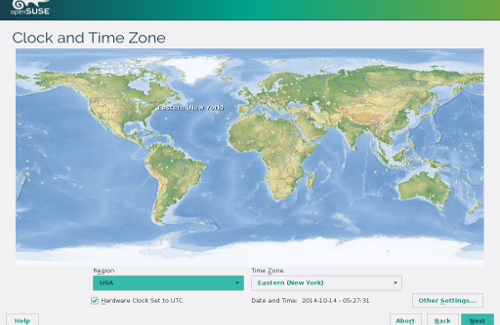
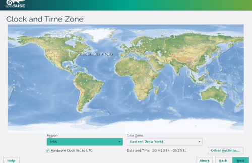
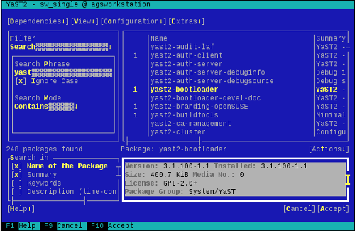
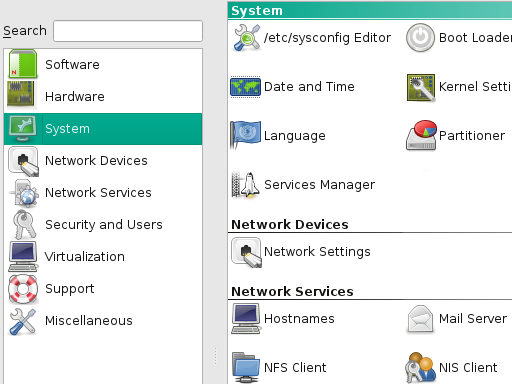
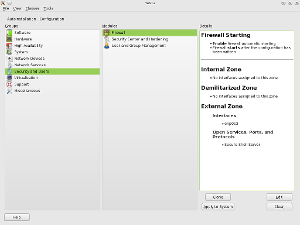

From installation to fine tuning
YaST is both an extremely flexible installer and a powerful control center. It's an all-purpose tool for computing.
YaST is both an extremely flexible installer and a powerful control center. It's an all-purpose tool for computing.
YaST offers two graphical interfaces (Gtk+ and Qt) and a terminal-based interface that is perfect for remote administration.
YaST includes modules to configure almost every aspect of a Linux system and provides a solid framework for further development.
AutoYaST enables you to export system-configuration settings and install them on thousands of other systems automatically.
